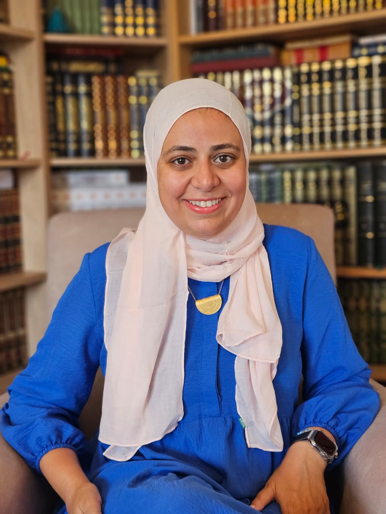
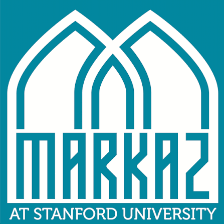
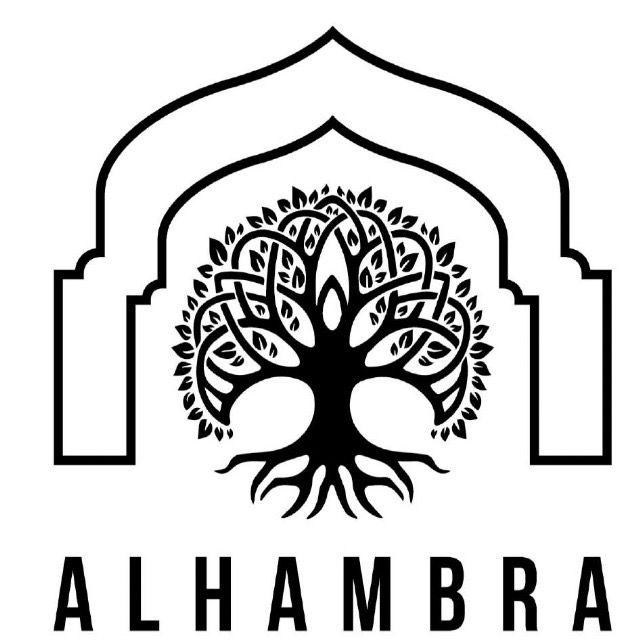

MSU Board
The board is organized into five committees, each leading a different part of MSU's work on campus.
Want to contribute to the board? Fill out this form to join as an associate member!
Spiritual
Leads Jumu'ah, halaqas, and the spiritual programming that nurtures the community's faith and connection to Islam.
Community Building
Plans social events and gatherings that bring students together and build lasting friendships.
Social Justice
Organizes advocacy, education, and service initiatives rooted in Islamic values of justice.
Public Relations
Manages MSU's communications, social media, and outreach to the wider Stanford community.
Graduate Community
Supports graduate and professional students with programming tailored to their needs.
Chaplaincy
Ustadh Yasin Ahmed
Dean for Religious & Spiritual Life
Ustadh Yasin Ahmed is Associate Dean for Religious & Spiritual Life and Advisor for Muslim Life at Stanford University, where he supports the spiritual, religious, and personal well-being of Stanford's diverse community. He works closely with Muslim students, faculty, and staff. Yasin studied Islamic sciences at Nakhlah Institute before earning an MA and Graduate Certificate in Islamic Studies and Chaplaincy, with a concentration in Interfaith Relations, from Hartford Seminary. He has served in spiritual life and higher education for more than a decade, including as the first Muslim chaplain at Cornell University and as a Director of Religious & Spiritual Life at a liberal arts college.
Learn more →
Dr. Amina Darwish
Chaplain, Alhambra
Amina Darwish is the chaplain at Alhambra serving the Stanford Muslim community. She served as the Associate Dean for Religious and Spiritual Life and Advisor for Muslim Life at Stanford for five years. She previously served as the first full-time Muslim Life Coordinator at Columbia University, and the first Muslim chaplain at the University of Cincinnati. Dr. Darwish has almost two decades of professional experience working with the Muslim community. She also brings years of experience building and serving in nonprofit organizations and interfaith spaces. Dr. Darwish brings a unique blend of understanding the different cultures within the Muslim community while staying grounded in traditional Islamic scholarship.
Learn more →
Dr. Rania Awaad
Chaplain Affiliate
Rania Awaad, M.D. is a Clinical Professor of Psychiatry at the Stanford University School of Medicine where she is the Director of the Stanford Muslim Mental Health & Islamic Psychology Lab as well Stanford University's Affiliate Chaplain. She also serves as the Associate Division Chief for Public Mental Health and Population Sciences as well as the Section Co-Chief of Diversity and Cultural Mental Health. In addition, she is a faculty member of the Abbasi Program in Islamic Studies at Stanford University. She pursued her psychiatric residency training at Stanford where she also completed a postdoctoral clinical research fellowship with the National Institute of Mental Health (NIMH).
Learn more →Affiliated Organizations
MSU works alongside these organizations to serve the broader Muslim community.

Markaz Resource Center
The Markaz supports a vibrant community of students who identify with or are interested in Muslim experiences both on campus and around the world.
Visit Website
Alhambra
Alhambra is a 501(c)(3) organization registered with Stanford’s Office for Religious and Spiritual Life (ORSL) as the official external support organization for the Muslim Student Union.
Visit Website